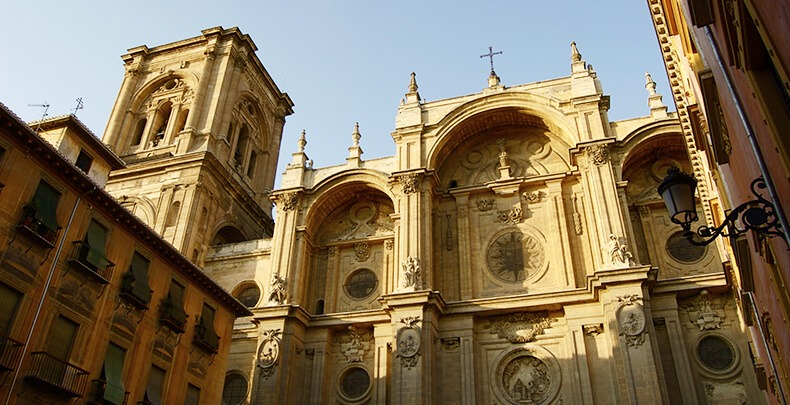

GRANADA

CATEDRAL DE GRANADA
.jpeg)
comenzamos la ruta en uno de los monumentos más importantes de la ciudad, la Catedral de Granada, construida sobre una antigua mezquita tras la Reconquista. Es una obra maestra del Renacimiento español y destaca por su impresionante fachada principal y sus majestuosas columnas en el interior. La capilla mayor, con su enorme cúpula, es uno de los puntos más impactantes del templo.
Duración de la visita: 1 hora Consejo: No te pierdas la Capilla Real, justo al lado, donde están enterrados los Reyes Católicos.
A tan solo unos pasos de la Catedral, se encuentra la Plaza Bib-Rambla, un lugar perfecto para relajarte en una terraza o admirar su fuente central, conocida como la Fuente de los Gigantes. Este espacio vibrante está lleno de vida con sus cafeterías y tiendas cercanas. Era en el pasado un mercado y un punto importante en la ciudad nazarí.
Duración de la visita: 20-30 minutos Consejo: Ideal para hacer una parada y disfrutar de un café al aire libre.
puedes dirigirte a la Alcaicería, una serie de callejones estrechos que antiguamente formaban el zoco árabe. Hoy en día, está lleno de tiendas de artesanías, recuerdos y productos típicos de Granada, como cerámicas, lámparas árabes y tejidos. Pasear por la Alcaicería te transportará a otra época.
Duración de la visita: 20 minutos Consejo: Perfecto para comprar recuerdos o artículos tradicionales.
Lucia Marroquin Edad: 25 Años Estudios: Licenciatura en Turismos Internacionales